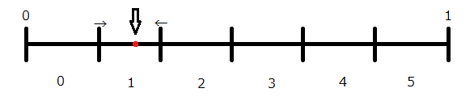

より精度の高いサイコロを目指して
・乱数
今回のテーマは乱数です。
決められたことを忠実に実行するプログラムにおいて、
不確定要素を入れるために乱数を使うかと思います。
しかし、やはりPCは決められた計算しかできないので、
乱数はどうしても疑似乱数でしかありません。
なるべくばらばらな数が選ばれるような乱数生成法を紹介します。
(なお、乱数を扱う以上、誤差が出るのは仕方ないので、結論がきっぱりでません。)
・乱数生成法
C言語では乱数を取得する関数はrand()関数があります。
内部でどんな処理をして乱数を返しているのかはわかりませんが、
何もしなければいつも同じ数値を返してきます。
なのでsrand(unsigned int)関数で、初期値を設定します。
普通は常に変わる数である"時間"を入れます。(#include <time.h>)
srand((unsigned int)time(NULL));
rand();
今回はサイコロ試行をしたいと思うので、1〜6までの数が欲しいですが、
配列の都合上0〜5までを返すようにします。
そこでrand()を6で割ったあまり(剰余)をとります。
さて、DXライブラリ
では乱数を返すGetRand(int max)関数があります。
こちらは何もしなくても0〜maxまでの乱数を返してきます。
一応初期値を設定する関数はSRand(int seed)関数があります。
SRand((int)time(NULL));
GetRand();
今回はこれとは別に一つ乱数生成法を実装してみたいと思います。
・ベルヌーイ試行
ある事象がある確率で起こるとき、起こることを成功・起こらなければ失敗と表せる。
このような成功と失敗によって区分される試行をベルヌーイ試行といいます。
ベルヌーイ試行を区間[0,1)で乱数Uで表すにはUが確率pで起こるとすると U<=p で成功 U>p で失敗とすればいい。
一般的には事象は2種しかないということはないと思いますので、
この区分の個数を増やして試行します。
イメージとしては、大きさがまちまちに区切られた箱に適当にボールを放り込んで入ったところをとる。感じです。
そこでまず、6等分した箱を用意します。
そして試行をします(数値の決定)
で、入ったところの区画を狭めて、別の区画を広げます。

これは出た事象が次に出る確率を低くし、別の事象が出る確率を高くすることを意味します。
これを繰り返して、各事象が平均的に出るようにします。
それではコードを示します。
//インクルードファイル
#include <DxLib.h>
//pragma宣言
#pragma warning(disable:4244)//float->intの情報落ち警告を消す
//define定義
#define MAX_NUM 6
//減少率:定義
const float DOWN_RATE=(1-20/100.0f);//確率減少20%づつ
//各種数値の確率
float per[MAX_NUM];
//per配列の初期化
void init_per(){
//初期の各確率は等しい
memset(per,1.0f/(MAX_NUM),sizeof(float)*MAX_NUM);
}
//0〜1までの乱数DXライブラリ:GetRand()使用
float randf(){
return GetRand(100000)/100000.0f;
}
//確率を元に数値を返す
int GetRandNumber(){
int ret=0;
float r=randf();//0~1
//ベルヌーイ試行によりperを確率として数値の決定-------
float sum=0.0;
for(int i=0;i<MAX_NUM;i++){
if(sum<r && r<sum+per[i]){
ret=i;
}
sum+=per[i];//最終的に1.0前後になるはず
}
//----------------------------------------------------
//選定数値の次回抽選確率を減少させる------------------
//それに伴い 選定数値以外の次回抽選確率を増加させる
//減少率はDOWN_RATE
for(int i=0;i<MAX_NUM;i++){
if(i!=ret){per[i]+=(per[ret]*(1-DOWN_RATE))/(MAX_NUM);}
}
per[ret]*=DOWN_RATE;
//----------------------------------------------------
//今までのfloat計算の誤差の修正-----------------------
//perの合計は1になるはず
//その誤差を求める->diff
float diff=1-sum;
for(int i=0;i<MAX_NUM;i++){
per[i]+=diff/(MAX_NUM);//誤差を均等配分する
}
//----------------------------------------------------
return ret;//選定数値を返す
}
(・・まったく・・・float使うなよ・・・)
今回はC言語のrand()、DXライブラリのGetRand()、それとこの自作乱数生成法とを比較して、
どの生成法が"ランダム"なのかを検証してみたいと思います。
検証用のコードはこちら
main.cpp GetRandNumber.cpp func.cpp
結果を表にまとめたのがこちら。
result.html
result.xlsx
| 検証回数 |
総試行回数 |
| 1回目 |
600 |
| 2回目 |
6000 |
| 3回目 |
60000 |
| 4回目 |
600000 |
| 5回目 |
6000000 |
グラフから読み取れることは、どの乱数生成法も試行回数が増えるほど事象差は大きくなり、
試行回数が増えるほど割合差は小さくなっていきます。
事象差が小さく、割合差も小さいほど、平均的に出ていると言えます。
試行回数が比較的少ないあいだはGetRandNumber()が割合差が小さくて、平均的に出ていると言えます。
逆に試行回数が増えると、GetRandNumber()は事象差が大きくなり割合差が大きくなります。
・感想
今回の統計は乱数の性質を調べたもので、あまり信憑性がありません。
試行回数も少し少なかったかな〜と思いました。
なるべく平均的な乱数生成法として、今回の方法が参考になれば幸いです。
・参考サイト様
1 乱数と確率事象
乱数とベルヌーイ試行について、詳しく書かれています。
Ｃ言語講座：srand( )とrand( )
rand()とsrand()について簡単に書かれています。
ＤＸライブラリ置き場 ＨＯＭＥ
GetRand()関数があるDXライブラリの頒布元です。
すばらしいライブラリをありがとうございます。
以下DXライブラリとGetRand()のライセンス条項です。
DX Library Copyright (C) 2001-2008 Takumi Yamada.
GetRand()::
Mersenne Twister
Copyright (C) 1997 - 2002, Makoto Matsumoto and Takuji Nishimura,
All rights reserved.
Redistribution and use in source and binary forms, with or without
modification, are permitted provided that the following conditions
are met:
1. Redistributions of source code must retain the above copyright
notice, this list of conditions and the following disclaimer.
2. Redistributions in binary form must reproduce the above copyright
notice, this list of conditions and the following disclaimer in the
documentation and/or other materials provided with the distribution.
3. The name of the author may not be used to endorse or promote products
derived from this software without specific prior written permission.
THIS SOFTWARE IS PROVIDED BY THE AUTHOR ``AS IS'' AND ANY EXPRESS OR
IMPLIED WARRANTIES, INCLUDING, BUT NOT LIMITED TO, THE IMPLIED WARRANTIES
OF MERCHANTABILITY AND FITNESS FOR A PARTICULAR PURPOSE ARE DISCLAIMED.
IN NO EVENT SHALL THE AUTHOR BE LIABLE FOR ANY DIRECT, INDIRECT,
INCIDENTAL, SPECIAL, EXEMPLARY, OR CONSEQUENTIAL DAMAGES (INCLUDING, BUT
NOT LIMITED TO, PROCUREMENT OF SUBSTITUTE GOODS OR SERVICES; LOSS OF USE,
DATA, OR PROFITS; OR BUSINESS INTERRUPTION) HOWEVER CAUSED AND ON ANY
THEORY OF LIABILITY, WHETHER IN CONTRACT, STRICT LIABILITY, OR TORT
(INCLUDING NEGLIGENCE OR OTHERWISE) ARISING IN ANY WAY OUT OF THE USE OF
THIS SOFTWARE, EVEN IF ADVISED OF THE POSSIBILITY OF SUCH DAMAGE.
次回はfunc.cpp内の関数format()についての解説をしたいと思います。